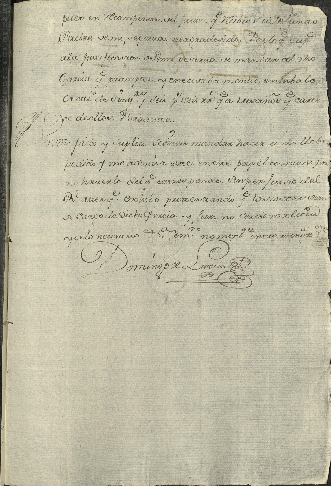
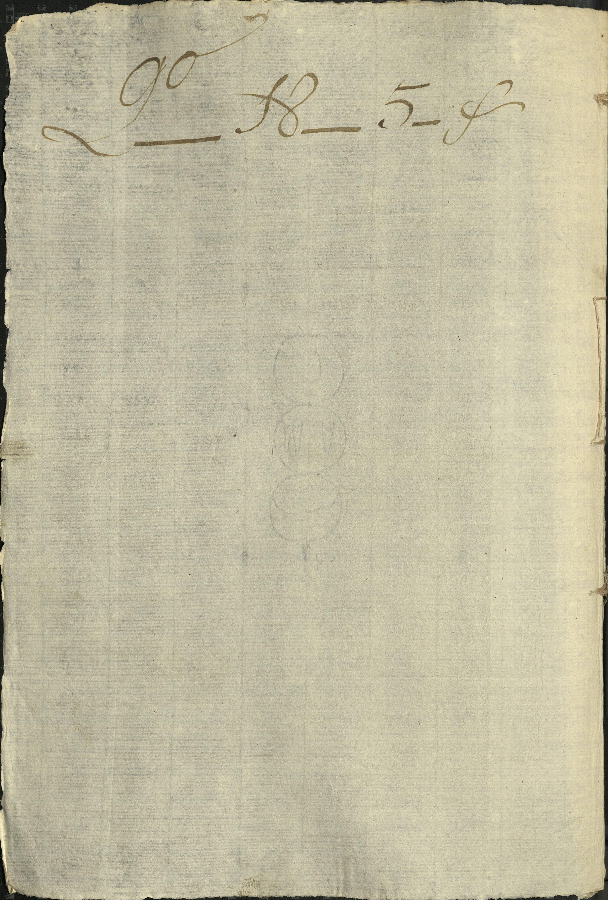

Miguel García · Joseph García


| Fondo | Presidencia Municipal (PM) |
| Firma AMS | AMS, PM, c 26, e 19, 6 ff |
| Fecha | 9 de diciembre de 1768 (según la ficha del catálogo) |
| Descripción de la ficha del catálogo (tal cual) | Miguel García demanda a Domingo Letona el pago de 120 pesos por la venta de una casa que le heredó su padre José García. |
| Id de ficha en el portal | 65215 |
| Personas indexadas en la ficha | Miguel García, Domingo Letona, José García |
Lectura paleográfica parcial. Lo que no se lee con certeza está marcado [ilegible] o [duda: …] y no se toma como dato.
Imagen 1: última foja de un escrito de petición (empieza a media frase).
«… pues en recompensa el favor que recibió [duda: su] difunto padre de mí, se porta ya agradecido. Por lo que suplico a la justificación de vm sirva de mandar al dicho García que prompta y ejecutivamente exhiba la cantidad de [duda: cincuenta] y seis [duda: pesos] y seis [duda: reales] que a tres años que [duda: me] cargo de ellos. Por tanto, a vm pido y suplico se sirva mandar hacer como llevo pedido, y me admita este en este papel común por no haberlo del que corresponde, sin perjuicio del Real erario, que exhibo protestando que la cuenta va a cargo de dicho García, y juro no ser de malicia, y en lo necesario etc.»
Firma: «Domingo de Letona» (rúbrica).
Imagen 2: reverso en blanco, con anotación [duda: «Gº 18 – 5 – f»] y filigrana (marca de agua) visible.
Imagen y ficha: Archivo Municipal de Saltillo, Sefarad MX. Fuente: Archivo Municipal de Saltillo, portal del archivo digital (Presidencia Municipal). Verificado y avalado por Sefarad MX · genealogiasefardi.site.